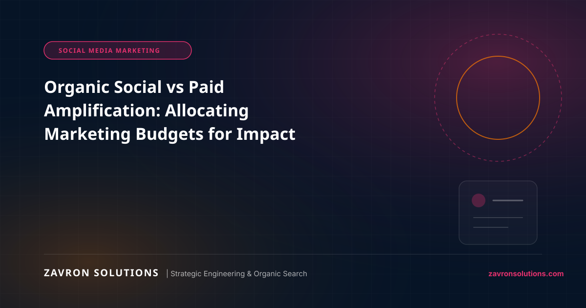

In today's hyper-competitive American marketplace, winning online requires more than superficial aesthetics or isolated marketing tactics. It demands a rigorous synergy between high-performance custom web engineering, topical organic SEO authority, and friction-free conversion UI/UX design.
1. The Strategic Imperative for Modern US Businesses
Whether scaling an enterprise software suite, dominating a high-intent regional service market through local SEO leadership, or expanding an omnichannel store with modern e-commerce architecture, the digital baseline has evolved. Buyers conduct extensive preliminary research across organic search, comparison portals, and peer reviews before ever submitting an inquiry or initiating checkout.
Organizations that rely on fragmented systems, bloated off-the-shelf templates, or unverified marketing promises consistently suffer from escalating customer acquisition costs (CAC) and high bounce rates. Partnering with a dedicated engineering-first agency ensures your digital assets are engineered for long-term scalability.
Sustainable commercial dominance is built on technical precision, sub-second Core Web Vitals, and deep topical schema architecture that search engine crawlers and prospective buyers trust unconditionally. Explore our full suite of Paid Social & Brand Amplification to accelerate your digital growth.
2. Core Architectural Pillars & Best Practices
To outpace legacy competitors and secure long-term market leadership, American leadership teams must execute against three core operational standards:
- Sub-Second Infrastructure & Edge Delivery: Eliminate unnecessary script bloat, implement modern asset compression, and ensure Largest Contentful Paint (LCP) clocks under 0.8 seconds using technical SEO best practices.
- Topical & Entity Search Alignment: Structure semantic JSON-LD schema graphs, publish comprehensive topic cluster hierarchies, and claim authoritative Knowledge Graph entities to dominate Google AI Overviews and traditional SERPs.
- Conversion Rate Optimization (CRO): Remove form friction, integrate express payment options (Apple Pay, Shop Pay), and provide instant value confirmation at every user touchpoint with high-precision digital marketing funnels.
3. Measuring True Commercial ROI and Attribution
Vanity metrics such as raw page views or superficial impressions provide zero commercial clarity. Progressive leadership teams focus exclusively on qualified pipeline value, cost per qualified lead (CPQL), organic search share of voice, and customer lifetime value (LTV).
By unifying multi-touch attribution with CRM data and scalable Google Ads search campaigns, businesses can precisely identify which architectural upgrades and high-intent keyword clusters drive tangible top-line revenue. Discover how our clients have scaled by reviewing our verified case studies.
4. Actionable Next Steps for Growth
Conduct a thorough technical audit of your existing web infrastructure, analyze competitor search footprints in your primary US target markets, and eliminate bottlenecks that inhibit conversion velocity. If your team is evaluating tailored industry solutions, check our specialized strategies for Industry-Specific Solutions.